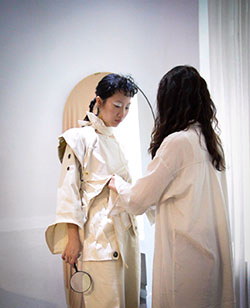

I am Rinzy Lu from Taiwan.
and graduate from SCU with
a Bachelors degree in Fashion Design.
This website has been created for
displaying my design works during the college.
It also recorded the progress in
my technique of making clothing.